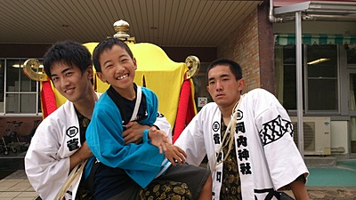
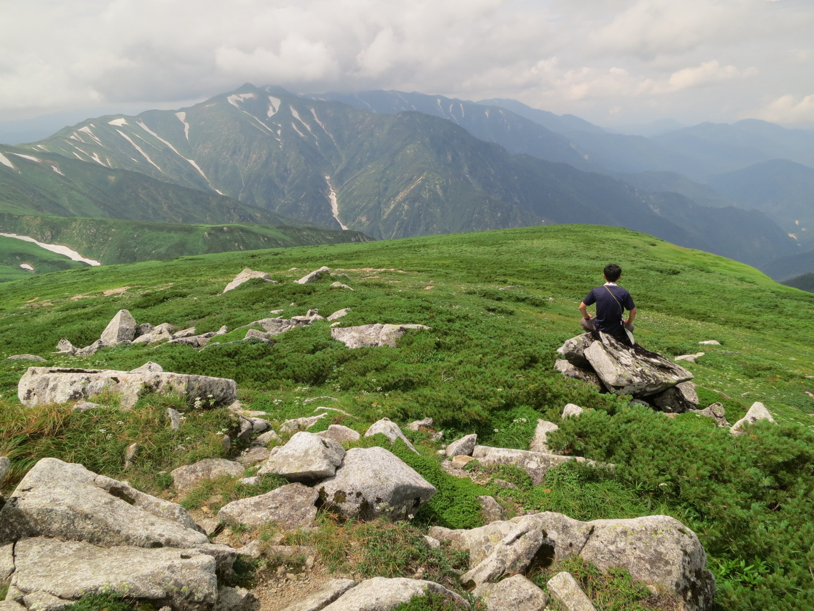

Members
| 一山智弘（いちやま ともひろ） | ||
 |
印象に残ったワンゲルメニュー | 二郎くん |
|---|---|---|
| 食べてみたい珍味 | キャビア、ドリアン、ネマガリダケ | |
| ワンゲルで学んだこと | 無限等比級数を使った米の７等分法 | |
| ワンゲルで一番つらかったこと | 起床係 | |
| 山で会ってみたいもの | トトロ、こだま、メササメサメササー | |
| 今年の目標 | 富士山メロンパンを食べに行く | |
| ひと言：ドビーは悪い子 | ||
| 大橋宗史（おおはし ひろふみ） | ||
 |
行きたいところ | 北海道 |
|---|---|---|
| 趣味 | サッカー観戦、鉄道旅行etc | |
| 好きなアプローチ | 上越線鈍行 | |
| 今年の目標 | 山スキーに挑戦 | |
| 今後の目標 | 少林寺との運動会兼部の維持 | |
| ひと言：秋から軍資金集めに奔走します | ||
| 高市雄太（たかいち ゆうた） | ||
|  | 趣味 | 野球観戦（巨人メイン）、地域行事（祭り、花火とか）を見たりやったり |
|---|---|---|
| やってみたいこと | 海外（先進国以外）でのんびりする | |
| 行ってみたいところ | 宇宙 | |
| 好きな球団 | 巨人、ヤクルト | |
| 今年の目標 | 冬の間に来年の夏山の資金集め | |
| ひと言：木に囲まれた山行が良い、限界上はただ寒いだけ | ||
| 陳立峻（ちん りっしゅん） | ||
 |
趣味 | サイクリング |
|---|---|---|
| 好きな行動食 | 板チョコ、ヤマザキのコッペパン | |
| ワンゲルで行ってみたいところ | 夏の笈ヶ岳 | |
| 21歳の目標 | 厳冬期3000で一人旅 | |
| 将来の夢 | 生計を立てる | |
| ひと言：痩せたい | ||
| 豊島理史（とよしま さとし） | ||
| 趣味 | 野球観戦（カープ） | |
|---|---|---|
| 好きな山行スタイル | 長期縦走、沢登り | |
| 行ってみたいところ | インド、ネパール | |
| やってみたいこと | 徒歩か自転車で日本一周 | |
| 今年の目標 | 忘れ物をしない | |
| ひと言：カープファンの入部を期待します | ||
| 廣長 啓太（ひろなが けいた） | ||
 |
行ってみたいところ | 日本各地の沢、厳しい藪 |
|---|---|---|
| 思い出の山行 | 和賀合宿 | |
| 嫌いなヤツ | ネズミ | |
| 目標 | 山と勉強の両立 | |
| ひと言：今年は冬山にたくさんいきたいな | ||
| 村瀬唯斗（むらせ ゆいと） | ||
 |
趣味 | パソコンいじり |
|---|---|---|
| 好きな山行スタイル | 3、4泊程度の軽めの縦走 or 山スキー | |
| 行きたい場所 | 南奥駈を通っての熊野本宮 | |
| 愛着のある山 | 地元の六甲山 | |
| 好きなLisp | Commin Lisp | |
| ひと言：C言語で話せるわけないじゃないですかやだなー | ||
| 茂木聖 (もてぎ さとる) | ||
|  | 趣味 | 古墳巡り、寺社巡り、友達の家に夕飯をたかりに行くこと |
|---|---|---|
| 好きな教官 | 火曜５限、比較地域史の鈴木直志先生 | |
| 行ってみたいところ | 大仙古墳 | |
| やってみたいこと | 理系トークにまぜてもらうこと | |
| 今年の目標 | 下宿に巣くう害虫たちとの共存共栄 | |
| ひと言：一緒に群馬ネタまたは文系トークで盛り上がってくれる方、募集してます。 | ||